First off the starter code starts by creating the scene in the placeholder html canvas object and establishes the Babylon engine. Furthermore, the scene where all objects will be stored is declared and within it first we have a camera that orbits around the specified Vector and a light to illuminate the scene. A glb of the village is also here Imported from babylon assets
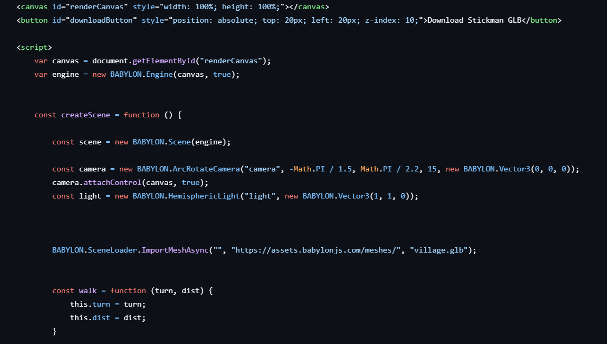Then the "dude" object is introduced. Firstly, the dude has a specified "walk" array that specifies how much the dude should rotate and how far he should go as the function suggests for his walking cycle. Furthermore, the dude babylon file is imported from local files and given an initial position and rotation. Furthermore, the animation within the .babylon file is begun playing from frames 0-100 then looping. Then the variables for the distance, step length, and path are made.
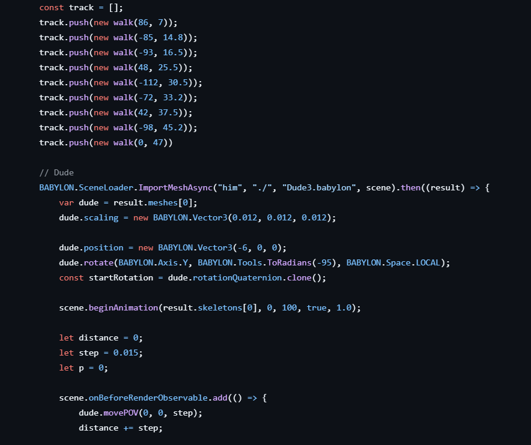The rest of the Dude object is just using those variables and the predefined track to define where the dude will move. dude.movePOV takes the step variable and moves the dude forward, the distance variable is used to track how far the dude has walked, and the p variable is used for the track array every time the dude walks a defined distance to rotate the dude by what is defined in track and then increment the p variable to the next array entry. The p variable loops back with %
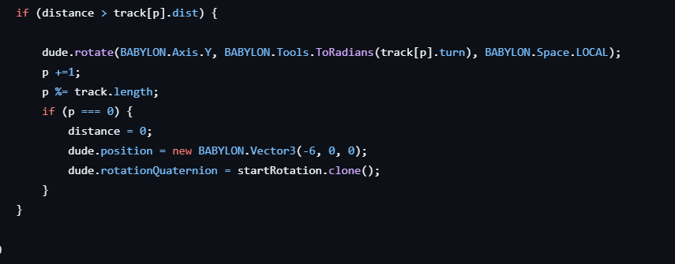Then, some additional meshes are imported being a bunny and a troll both also local files. Then starts the creation of a few sphere objects, 1 sphere is small and positioned off to the side behind the village buildings.
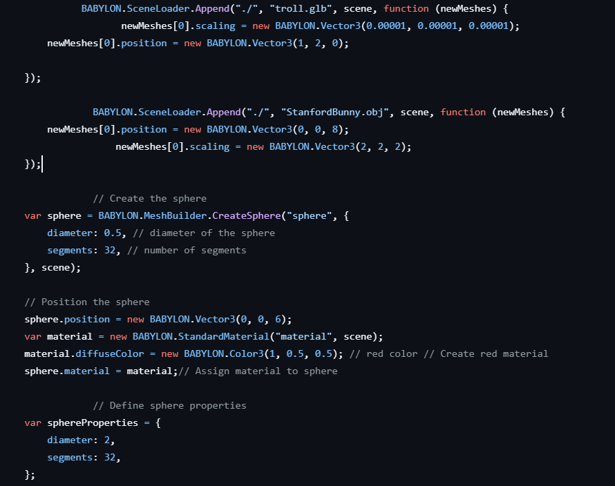Then, three more bigger spheres are created, 1 blue, 1 red, 1 green. They are all positioned close to the middle with the red one being right in the middle while the blue sphere is on the x axis and the green sphere is on the y axis. Each is given a standard material
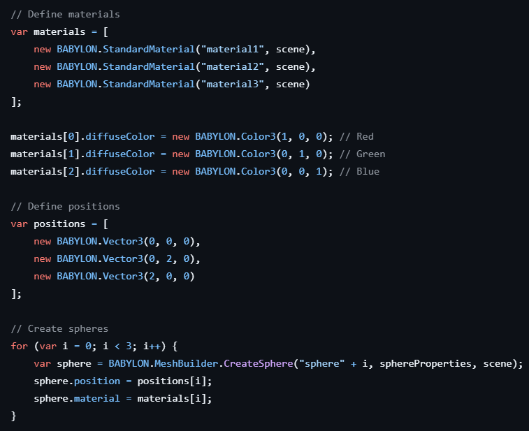Then at the end of the scene function, the scene object is returned to be rendered and the engine is resized.
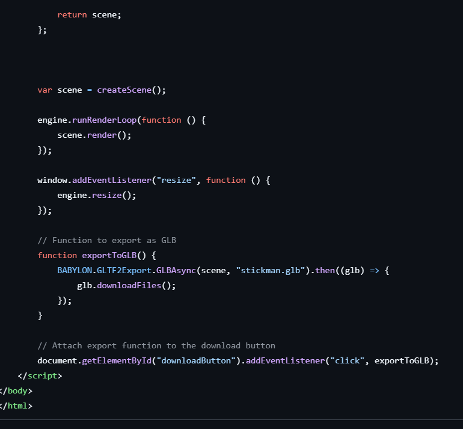For my first change, I added the car from the Babylon tutorial. The car is first given an initial position and rotation and is imported using a glb from the Babylon website. Following the tutorial, this car also has the ability to drive forward given some keyframes in the carKeys array specifying frames where the car moves a certain distance. I personally edited this to allow the car to go a different direction diagonally along both the x and z axis after stopping for a brief moment (To drive down the road I add in change 2). The animCar is what defines and stores the animation of the car (The position is modified wth a Vector3 and Loops.) The second animation was not part of the tutorial. This animCarRotation follows the example of the tutorial and uses keyframes to rotate the car at an angle so that when the car drives diagonally it is facing a direction that makes sense. The car rotates while stopped. This animation uses float values and also loops. This was my third change (change 2 added the road and gave me the idea). Both animations are called at the same time as the array carAnimations is called that they were both added too.
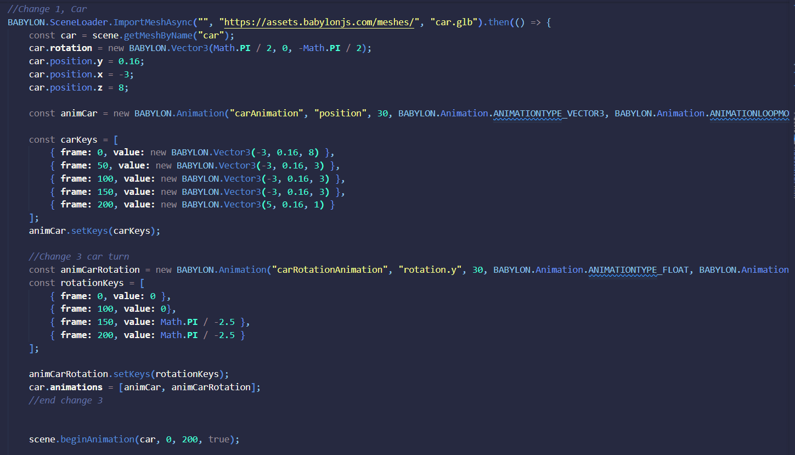Furthermore, the tutorial led me to also finish the car by adding a simple wheel animation from the imported meshes. The animations all start frame 0 for each wheel
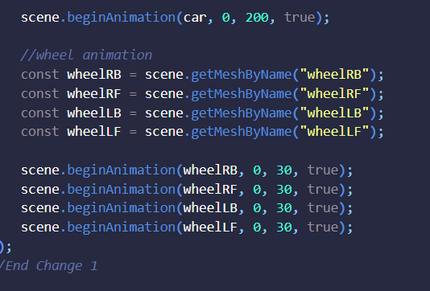Further following the tutorial, I decided to add a better ground to the scene. This ground consists of a few things. A groundmap created using the stardard material in Babylon and given a village green png as its texture and the ground which has a certain size and is given the ground map as its material. This part is the main new ground which also adds a road to the village and a forest esc look. A large ground mat is then set up in the same way as the ground mat just using a different image. Then for the 3D mountain terrain, the large ground heightmap is created and given a heightmap png for mountains provided by babylon. This heightmap is then passed the largeground map as its material and is given a position of -0.01 y to prevent flickering issues
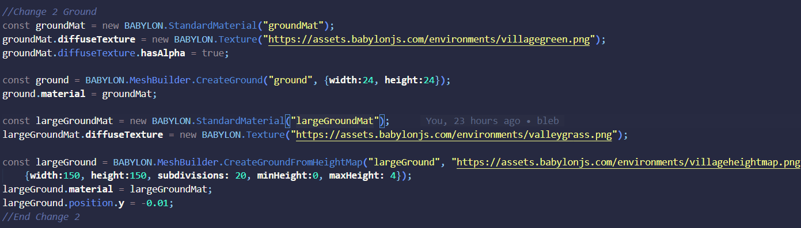After this, I wanted to add a skybox to the scene at least to a basic level, so after looking at the babylon tutorial, I searched for a basic skybox to color and imported it into my project as a dds file. The skybox is a literal box around the scene using the dds file as its texture. Backface culling false ensures the inside of the box is rendered. Setting the coordinate mode of the texture to SKYBOX_MODE ensures the dds images are mapped properly. Then colors are added and I made them black as any other change didnt give the effect I wanted. Then all these material changes are assigned to the skybox.
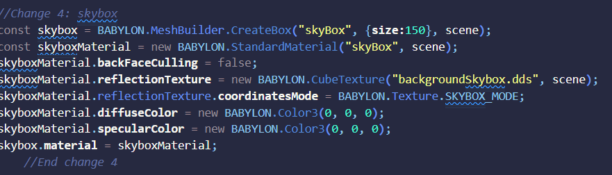Finally, after seeing the particle effects tutorial for the fountain, I repurposed it for to add particle rain to add to the grey skybox. This starts by defining a particle system that can manage 5000 particles at once. The particles are given the texture of a rain png I found. Then, a particle emitter is placed in the sky, with a minimum and maximum bound for the particle scattering. After, The colors of the particles and thier dead color (color when they despawn) is defined (I made mine different shades of blue). The particles are then given a minimum and maximum size to spawn inbetween and a min and max lifetime. An emit rate is then also defined to emit 1500 particles a second. The blend mode one to one makes the colors of the particles be added to the background. Setting the gravity y to be 9.81 simulates earths gravity (it is the gravitational constant of acceleration. The direction 1 and 2 define directions the particles are shot our towards when emitted. The emit speed defines the initial speed they are shot out at and the update speed defines how many seconds it takes for the internal particle state to be updated. Then of course this particle system is started.
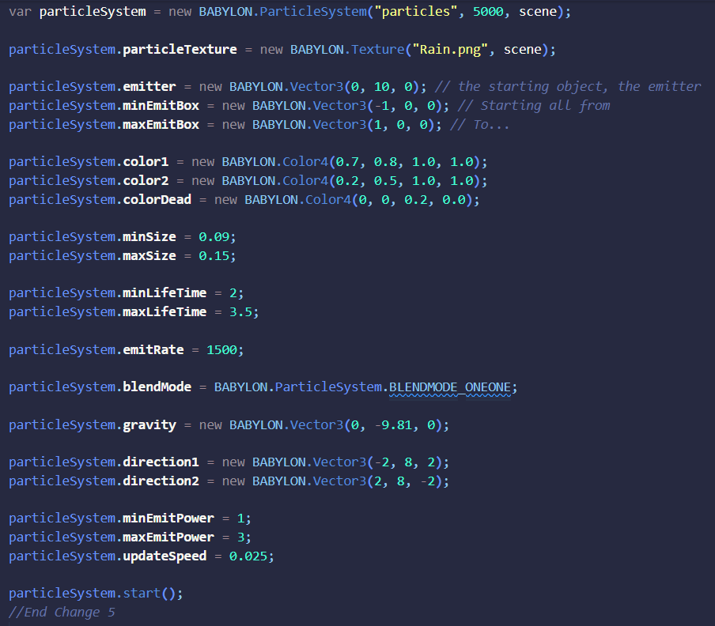